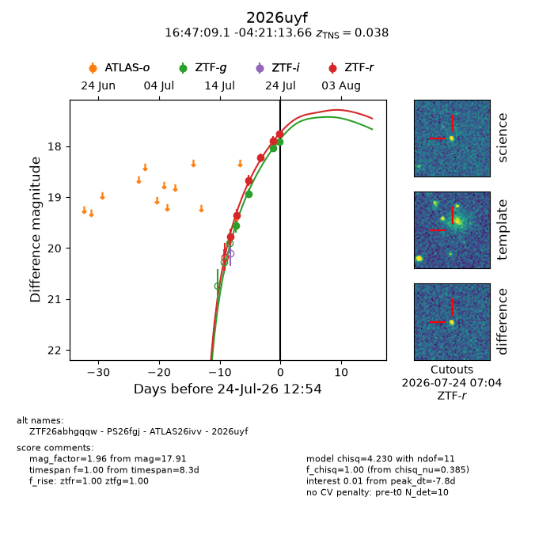
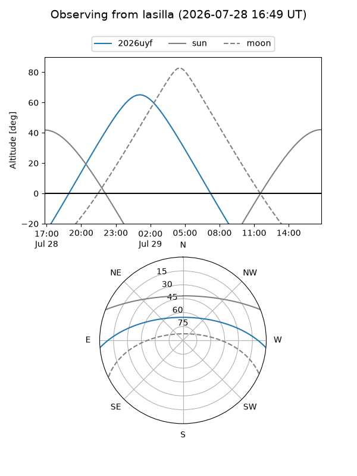
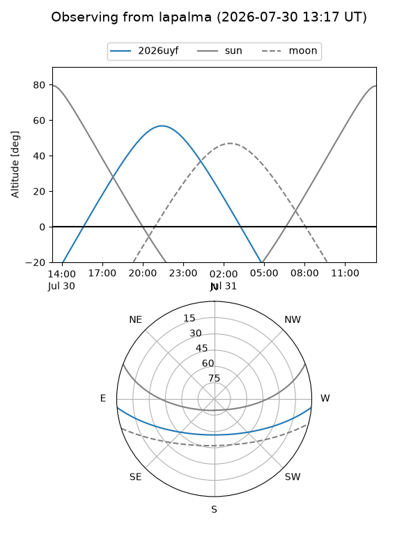
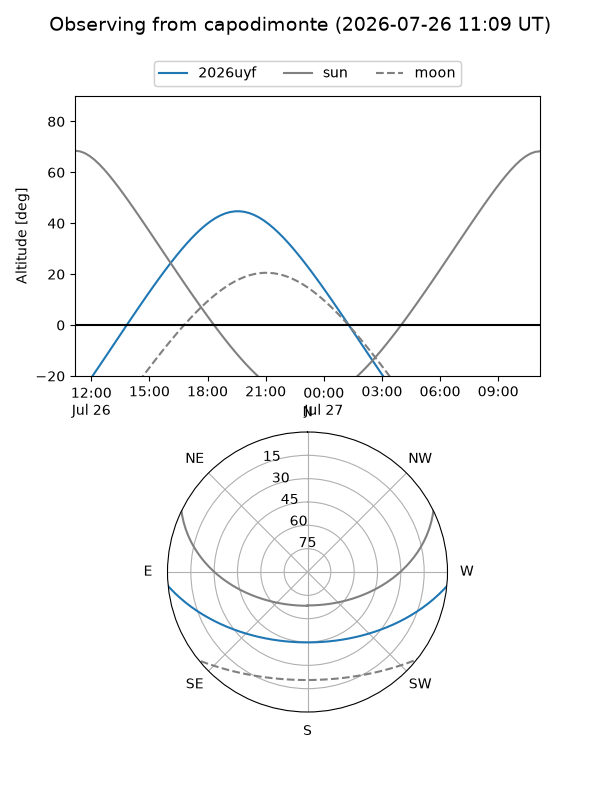
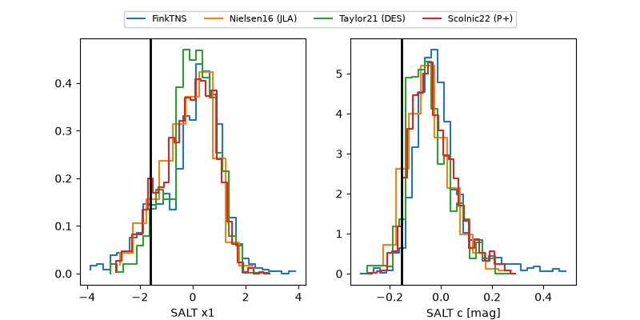

2026uyf
Target 2026uyf at 2026-07-24 12:56
Aliases and brokers:
FINK-ZTF: ztf.fink-portal.org/ZTF26abhgqqw
Lasair-ZTF: lasair-ztf.lsst.ac.uk/objects/ZTF26abhgqqw
ALeRCE-ZTF: alerce.online/object/ZTF26abhgqqw
YSE-PZ: ziggy.ucolick.org/yse/transient_detail/2026uyf
TNS name: wis-tns.org/object/2026uyf
Direct TNS query: direct search
alt names
ZTF26abhgqqw (ztf,fink_ztf)
2026uyf (tns,yse)
PS26fgj (panstarrs)
ATLAS26ivv (atlas)
Coordinates:
equatorial (ra, dec) = 251.7878,-4.35379
equatorial (HMS+DMS) = 16:47:09.06,-04:21:13.66
galactic (l, b) = (13.4446,+25.04885)
Flags:
TNS type: SN Ia
TNS redshift: 0.0380
peak dt: -7.8
Photometry:
last ztfg=17.91, ztfr=17.76
4 ztfg, 6 ztfr detections
Lightcurve

Visibility



Additional plots
